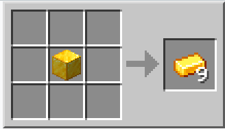
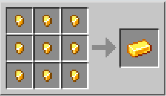

Lingotto d'Oro

| Nome | Lingotto d'Oro |
|---|---|
| Id | 173 |
| Tipo | Item |
| Raritá | Comune |
| rinnovabile | si |
| impilabile | si(64) |
I Lingotti d'oro si ottengono fondendo i blocchi di Oro grezzo nella fornace. Si usano principalmente per creare orologi, binari alimentati e blocchi d'oro. Si possono usare anche per fabbricare attrezzi e pezzi d'armatura. I lingotti d'oro si possono anche trovare nei bauli nelle segrete, nei templi del deserto e nelle fortezze; inoltre possono essere ottenuti uccidendo gli Zombi suino.
Gli attrezzi d'oro sono molto veloci ad estrarre blocchi rispetto a quelli di diamante; tuttavia, data la durabilità estremamente bassa degli attrezzi d'oro, essi si rivelano non pratici per l'uso, e sono utilizzati più per mettersi in mostra che per il loro valore come attrezzi. Gli attrezzi d'oro possono solo estrarre pietra, Pietrisco, carbone, netherrack e scalini; ma li estraggono più velocemente rispetto a qualsiasi altro attrezzo di materiale diverso, e potrebbero risultare utili se il giocatore ha fretta e possiede una buona quantità d'oro.
L'armatura d'oro è sconsigliata per l'uso, data la bassa durabilità e la rarità dell'oro. In origine l'oro aveva poco utilizzo, fino alla Beta 1.6, quando sono state aggiunte le rotaie alimentate (che richiedono 6 lingotti d'oro per essere fabbricate); il valore dei lingotti d'oro è aumentato notevolmente quando poi le rotaie alimentate sono diventate più potenti del Carrello da miniera con fornace (la cui potenza è stata ridotta).
Fabbricazione
 I lingotti d'oro possono essere ottenuti tramite crafting da due ricette differenti: Scomponendo un blocco d'oro e compattando 9 pepite d'oro